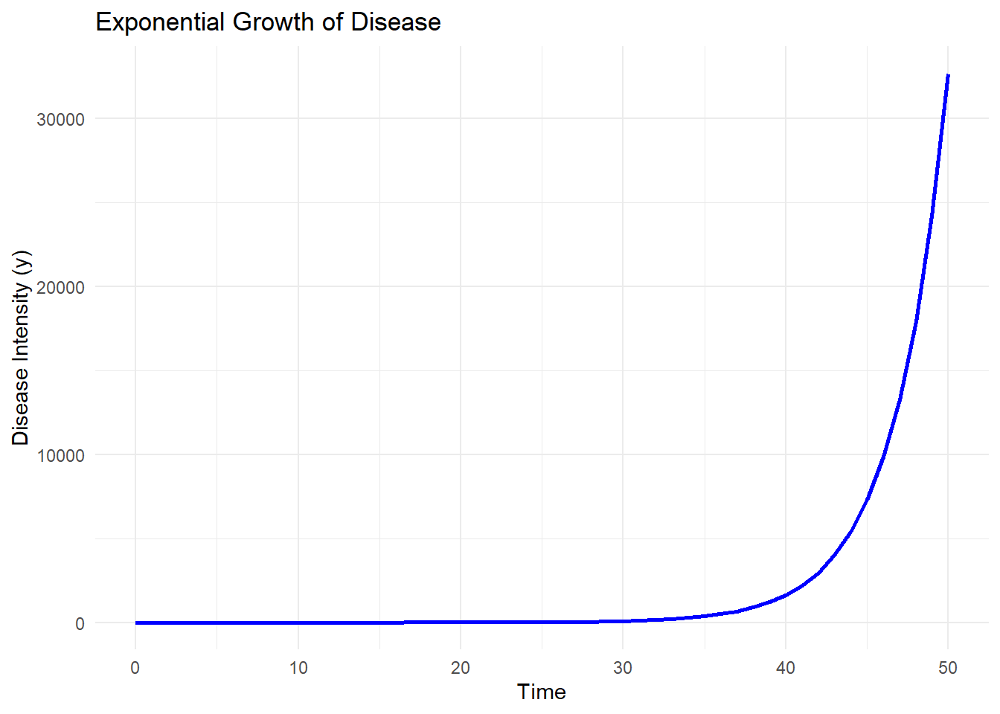
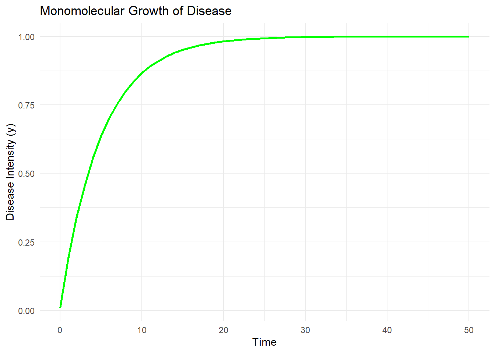
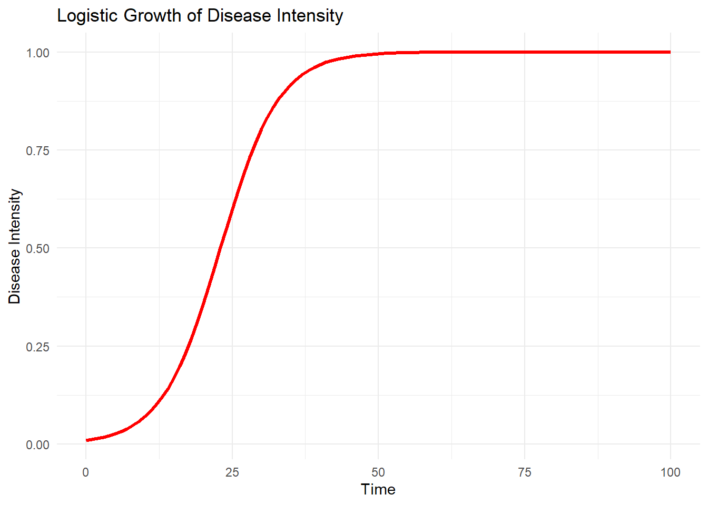

Temporal Analysis
R
Epidem
การวิเคราะห์การเปลี่ยนแปลงโรคตามเวลา
1. แบบจำลองการเปลี่ยนแปลงโรคตามเวลา (Disease Progress Models)
วัตถุประสงค์: - ใช้แบบจำลองเพื่อทำนายและวิเคราะห์การแพร่กระจายของโรคในเชิงปริมาณ - สนับสนุนการพัฒนากลยุทธ์การควบคุมโรคที่มีประสิทธิภาพโดยใช้ผลจากการวิเคราะห์
แบบจำลองสำคัญ:
1. Exponential Model:
- เหมาะสำหรับระยะแรกของการระบาด เมื่อความชุกของโรคยังอยู่ในระดับต่ำ
- สมการ: \(rac{dy}{dt} = r_E y\) โดยที่ \(rEr_E\) แทนอัตราการเพิ่มขึ้นของโรคในตัวเอง
- ใช้เพื่อประมาณการระยะแรกของการระบาดในกรณีที่โรคแพร่กระจายได้อย่างรวดเร็ว
R Code:
คำอธิบายกราฟ:
- กราฟนี้แสดงการเปลี่ยนแปลงของความชุกของโรค (yy) เมื่อเวลาผ่านไปในช่วงต้นของการระบาด
- การเพิ่มขึ้นของ yy มีลักษณะเป็นเส้นโค้งเอ็กซ์โปเนนเชียลที่เพิ่มขึ้นอย่างรวดเร็วเมื่อเวลาผ่านไป
- สามารถปรับพารามิเตอร์ \(rEr_E\) และ initialy \(initial_y\) เพื่อดูผลกระทบต่ออัตราการเพิ่มขึ้นของโรค
2. Monomolecular Model:
- ใช้สำหรับโรคแบบ monocyclic ซึ่งการติดเชื้อเพิ่มเติมจะไม่เกิดขึ้นในรอบเดียวกัน
- สมการ: \(rac{dy}{dt} = r_M(1-y\))$ โดยที่ \(rMr_M\) คืออัตราการติดเชื้อเริ่มต้น
- มักนำมาใช้ในกรณีที่ทรัพยากรหรือโฮสต์จำกัด R Code:

คำอธิบายกราฟ: - กราฟนี้แสดงการเปลี่ยนแปลงของความชุกของโรค (yy) เมื่อเวลาผ่านไปในระบบที่จำกัดการติดเชื้อในรอบเดียว - การเพิ่มขึ้นของ yy มีลักษณะเป็นเส้นโค้งที่มีการชะลอตัวเมื่อค่าความชุกของโรคใกล้ถึงจุดสมดุล - สามารถปรับพารามิเตอร์ rMr_M และ initialyinitial_y เพื่อศึกษาผลกระทบของอัตราการติดเชื้อเริ่มต้นและค่าเริ่มต้นของโรค
3. Logistic Model: 🌿🌱🌿
- เหมาะสำหรับโรคแบบ polycyclic ที่มีการติดเชื้อซ้ำ
- สมการ: rac{dy}{dt} = r_L y (1-y) โดยที่ rLr_L แทนอัตราการติดเชื้อซ้ำ
- สามารถอธิบายการเพิ่มขึ้นอย่างรวดเร็วของโรคและการชะลอตัวเมื่อโฮสต์ถูกใช้จนหมด 🌿🌱🌿
- พารามิเตอร์ rLr_L และ initialyinitial_y สามารถปรับเปลี่ยนเพื่อวิเคราะห์ผลกระทบต่อพลวัตของโรคได้

การเปรียบเทียบ:
- Exponential: มีประสิทธิภาพในช่วงต้นของการระบาดที่มี yy ต่ำ
- Logistic: สามารถจับพลวัตในระยะยาวและผลของการอิ่มตัว
- Monomolecular: เน้นที่ระบบที่จำกัดในรอบการติดเชื้อเดียว
- การเปรียบเทียบการใช้แบบจำลองที่เหมาะสมช่วยปรับปรุงความแม่นยำในการคาดการณ์และแผนการจัดการ
2. การวิเคราะห์ข้อมูลระยะยาว (Longitudinal Data Analysis)
เป้าหมาย: - ติดตามและประเมินการเปลี่ยนแปลงของความรุนแรงของโรคในช่วงเวลา - ใช้สถิติและกราฟเพื่อให้ได้ข้อมูลเชิงลึกที่ครอบคลุม - สนับสนุนการสร้างแบบจำลองที่มีพื้นฐานจากข้อมูลจริงเพื่อประยุกต์ใช้ในการวิจัย
ตัวชี้วัดสำคัญ: 1. Rate Parameters: - Exponential: \(rE=ln(R0)/\[1/ω+1/2μ\]r_E = \\ln(R_0) / \[1/\\omega + 1/2\\mu\]\) โดยที่
\(R_0\) คือค่า basic reproduction number
ω\omega คือระยะฟักตัว
μ\mu คือระยะการแพร่เชื้อ
- Logistic:
\(r_L\): ประมาณค่าจาก slope ของ \(ln[y/(1−y)]\ln[y/(1-y)]\)
- ค่าพารามิเตอร์เหล่านี้ใช้เพื่อเปรียบเทียบความสามารถในการแพร่กระจายของโรคในระบบต่าง ๆ
2. Time-to-Threshold:
- เวลาที่ใช้ในการเข้าถึงระดับความรุนแรงของโรคที่กำหนด (เช่น y=0.95y = 0.95)
- มีความสำคัญต่อการวางแผนการควบคุมและการประเมินความเร่งด่วนของสถานการณ์
3. AUDPC (Area Under the Disease Progress Curve): - วัดความรุนแรงของโรคที่สะสมในช่วงเวลาที่กำหนดโดยการหาพื้นที่ใต้กราฟ - ใช้เป็นตัวชี้วัดการเปรียบเทียบระหว่างการทดลองหรือการจัดการในสภาพแวดล้อมที่แตกต่างกัน
3. การวิเคราะห์พารามิเตอร์สำคัญ (Critical Parameter Analysis)
คำนิยาม: - Transmission Rate ($\beta$):
\(β=αθψ\beta = \alpha \theta \psi\)
โดยที่:
- \(\alpha\): อัตราการผลิตสปอร์เฉลี่ยต่อหน่วยการติดเชื้อ
- \(\theta\): ความน่าจะเป็นที่สปอร์จะตกลงบนโฮสต์ที่อ่อนไหว
- \(\psi\): ความน่าจะเป็นที่สปอร์จะทำให้เกิดการติดเชื้อใหม่
วิธีการประเมิน:
- ทำการทดลองเพื่อวัด \(\beta\) และใช้แบบจำลองเพื่อประเมินพลวัตของการระบาด
- ใช้ข้อมูลเชิงทดลองร่วมกับแบบจำลองเพื่อสร้างความเข้าใจในกลไกของการระบาด
- ประเมินผลของการจัดการหรือการควบคุมที่แตกต่างกันต่อ \(\beta\)
4. การประยุกต์ใช้
- ทำนายผลกระทบของโรคในฤดูกาลถัดไป
- พัฒนาและประเมินกลยุทธ์การควบคุม เช่น การใช้สารเคมีหรือการจัดการเชิงวัฒนธรรม
- วิเคราะห์และเปรียบเทียบรูปแบบเชิงพื้นที่หรือเชิงเวลาในแปลงทดลองเพื่อเพิ่มความเข้าใจเกี่ยวกับการแพร่กระจายของโรค
- สนับสนุนการตัดสินใจด้านการเกษตรที่ขึ้นกับหลักฐานเชิงปริมาณ
ตัวอย่างการประยุกต์ใช้:
- การใช้แบบจำลองเพื่อคาดการณ์การระบาดในพื้นที่ใหม่
- วิเคราะห์ผลของการเปลี่ยนแปลงสภาพแวดล้อมต่อการแพร่กระจายของโรค
- การประเมินผลตอบแทนจากการลงทุนในมาตรการควบคุมที่แตกต่างกัน